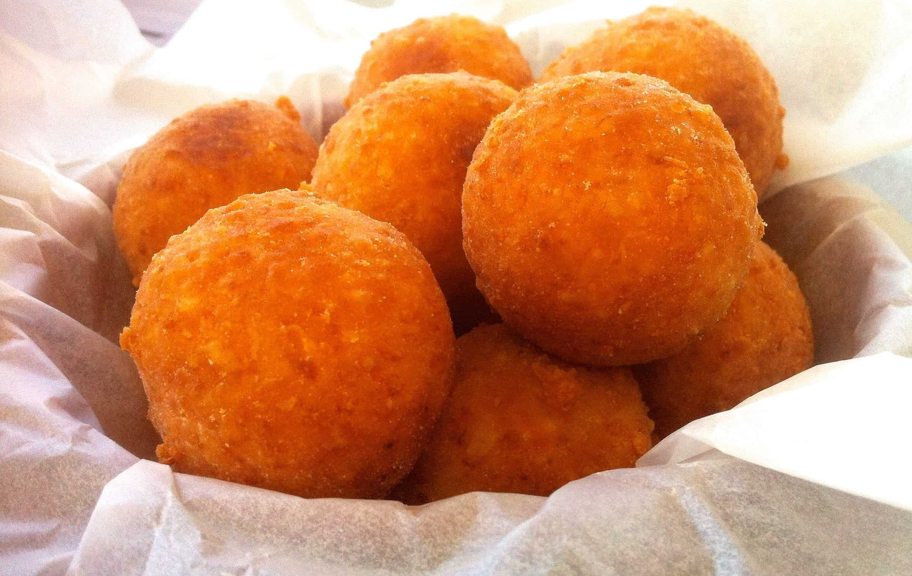

Cheese Balls

The yummy, stinky, unhealthy but bingeworthy fried ball of cheese!
Ingredients
Cheese:You can use vegan or dairy, it is purely preference.
Seasoning:Mix garlic powder, onion powder, or chili flakes! These stinkers will explode with flavor! Feel free to experiment and use whatever spices already on your shelves!
This recipe doesn't require a ton of ingredients. As long as you have a way of melting some cheese down into a moldable form like clay.